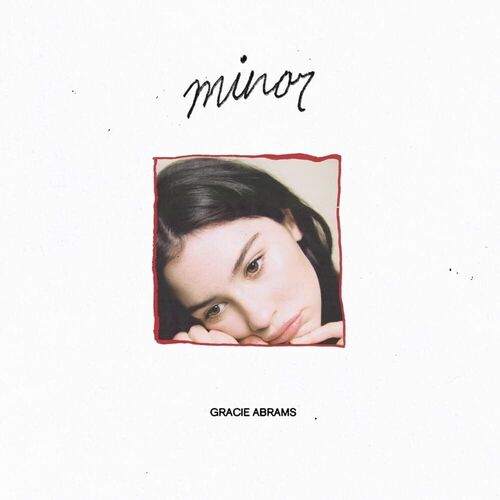
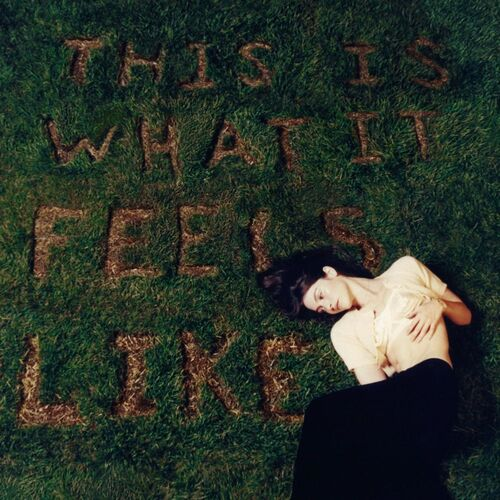
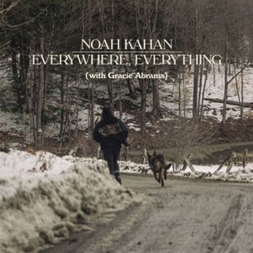

Gracie ha trabajado con artistas como Noah Kahan en "Everywhere, Everything" y con Taylor Swift en "Us".

Nombrada en la lista Forbes 30 Under 30 en 2023 y ganadora del American Music Award a Artista Revelación del Año en 2025.